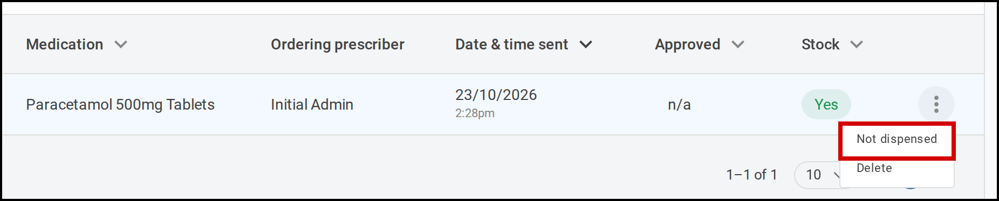
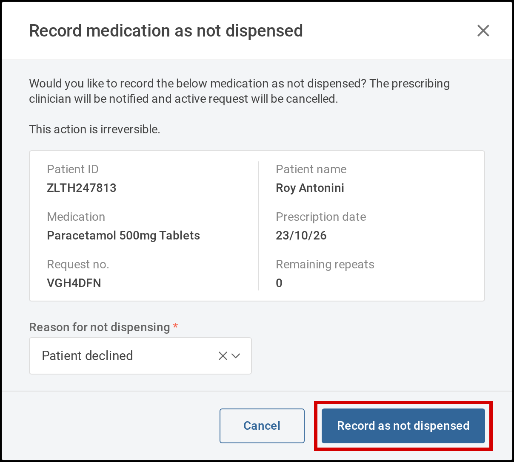
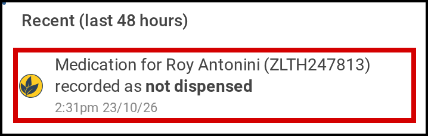
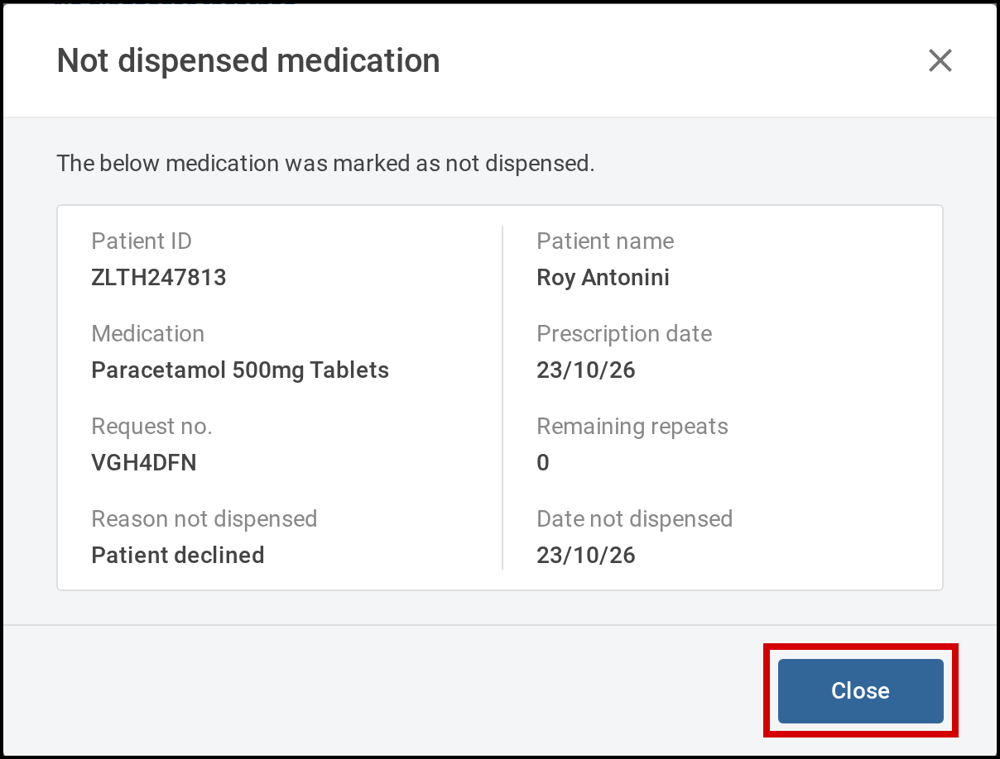

15.1 Record a medication as not dispensed Verified on demo site
When the pharmacy can't dispense a medication request, you record it as not dispensed. Start from Medication > Active requests. Tamanu cancels the request and lets the prescribing clinician know, so they can see why and prescribe again if needed.
Before you start
Recording a medication as not dispensed needs permission to delete medication requests. If you believe you should be able to do it, contact your system administrator.
Steps
Record a medication as not dispensed
-
In the menu on the left, select Medication, then Active requests.The Active medication requests list opens.
-
Find the request.Fill in any of the search fields, such as Patient ID, First name, Last name or Medication, then select Search.
-
Select the three dots at the end of the request's row, then Not dispensed.The Record medication as not dispensed window opens.

Select the three dots on the request's row, then Not dispensed. -
Check that the window shows the right patient and medication, then choose the Reason for not dispensing.Your site sets the list of reasons.
-
Select Record as not dispensed.This can't be undone. The request leaves the list, and the prescribing clinician gets a notification.

Choose the reason, then select Record as not dispensed.
See why a medication wasn't dispensed
The prescribing clinician sees the not dispensed record from their notification. Opening it needs permission to view medication requests. Without it, Tamanu shows You do not have permission to view medication request details.
-
On your Dashboard, select the bell at the top right.The Notifications panel opens.
-
Select the notification Medication for the patient recorded as not dispensed.The patient's encounter opens on its Medication tab, with the Not dispensed medication window showing the Reason not dispensed and the Date not dispensed.

Select the notification to see why the medication was not dispensed. -
Select Close.

The window shows the Reason not dispensed and the Date not dispensed.
Mockup: 15.1 Record a medication as not dispensed, as a reader meets it. Drafted with the
Draft user guide skill. The workflow first shipped in v2.66, and the guide describes v2.67. The
site chrome is illustrative.
- Verified on demo site: clicked through on the 2.67 demo site with the test patient, from prescribing and sending to pharmacy through to the prescriber's notification, and all four screenshots taken there
- Two sides, one guide: the pharmacy records it, and the prescriber sees why from their notification, under separate headings within Steps
- Proposed red outlines are on Not dispensed, Record as not dispensed, the notification, and Close